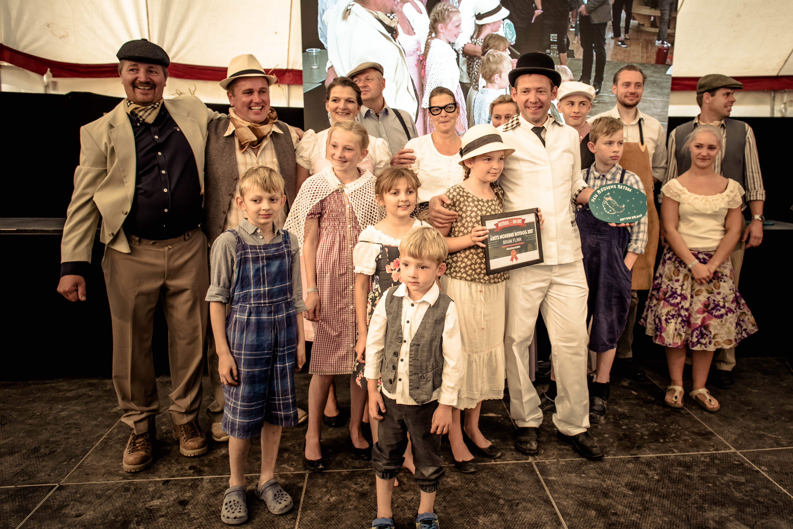

Vi vender endnu stærkere tilbage!
Søndag d. 4. september slår vi igen dørene op for den storslåede Hotdog konkurrence
til Food Festival på Tangkrogen. I får nu den unikke mulighed for at smide
fløjlshandskerne, træde ind i pølseverdenen og kæmpe om de eftertragtede titler
ved dette års Hotdog DM 2022. Konkurrencen er for både restauranter og kokke,
producenter og slagtere.
Konkurrencen afholdes af Food Festival i samarbejde med Ole Troelsø.

Al omsætningen går direkte til et velgørende formål. Gennem årene er omsætningen
fra Hotdog DM bla. Gået til CARE, Børnefonden og sidste gang i 2019 til
Dyreværnet, hvor der blev indsamlet 178.850 kr.

Ved Hotdog DM konkurreres om følgende priser:
Danmarks Bedste Hotdog
Vinderne af den mest smagfulde hotdog bliver vurderet af den skarpe
dommerkomité med prominente navne indenfor gastronomiens verden.
Årets Hotdog Konge
Vinderen af den mest solgte hotdog, vurderes af alle de hotdogsultne
Food Festival gæster. Hotdog kongen er også dem som bidrager med
den højeste sum penge til det velgørende formål.
Årets Innovative Hotdog
Kåres for den meste innovative, nytænkende og kreative hotdog. Prisen
bliver vurderet af den skarpe dommerkomité.
Hotdoggen skal tilberedes og anrettes i jeres container.
Hotdoggen skal præsenteres og serveres til dommerkomitéen på Kokkescenen.
Alle deltagere skal lave en ekstra hotdog til fotografering.
Som deltager skal alle udgifter selv dækkes.
Hele omsætningen går ubeskåret til det velgørende formål.
Gæsterne køber jeres hotdogs med kuponer. Kuponerne sælges af Food Festival til gæsterne i vores kuponsalgsvogn overfor hotdogcontainerne.
Værdi pr. kupon er kr. 50.
I fastsætter selv hvor mange kuponer der opkræves af gæsterne pr. hotdog.
Der stilles ikke krav til et minimum antal hotdogs, som skal sælges, men det kan berettes, at mange af deltagerne i de tidligere år fik udsolgt.
Udsmykning
Vi håber, at I vil være med til at sætte gang i hotdogfesten i jeres hotdogcontainer,
ved at lave den bedste iscenesættelse af jeres koncept. Vi ser, at der medbringes
skilte, kostumer, musik mv. Det er kun fantasien der sætter grænser for, hvor anderledes
og innovativt hotdoggen kan serveres.
Food Festival sørger for:
Gode indbydende fysiske rammer
Kølefaciliteter - halvt profilkøleskab pr. aktør
Deltagere og dommere
Konferencier
Fotografer, lyd og lys, samt sceneopsætning
En masse hotdog-elskende gæster
Food Festival vil sørge for massiv omtale af Hotdog DM. Men i fællesskab skal vi
også sørger for at lave så meget larm og få så meget opmærksomhed som muligt
på arrangementet.
Hotdogcontainer:
Tidligere har faciliteterne til Hotdog DM været klassiske pølsevogne, men i år har vi valgt at prøve noget nyt. Til Hotdog DM 2022 vil faciliteterne være rustikke og rå containere.
Det er derfor ikke muligt selv at medbringe vogn til Hotdog DM 2022.
Containerne vi (Food Festival) stiller til rådighed er både lånt og lejet. De vil derfor variere i størrelse, hvorfor nogle deles af to deltagere. Der trækkes lod om dette på forhånd.
Brødrister (inkl. strøm), stegepande (inkl. strøm) og håndvask er til rådighed i alle pølsevogne. Alt øvrigt udstyr som grills, engangsservice, hotdog holder, bakker til servering mv. medbringes af deltagerne selv.
FOOD stiller rengøringshold til rådighed, men det forventes naturligvis,
at vognene er opryddet og tørret over med vand og sæbe.
Den yderst kompetente dommerkomité vil være bestående af 8-10 personer, som er
kokke, madanmeldere, bloggere mm. Nærmere information om dommerkomitéen
vil komme løbende.
Hotdogsene vil blive bedømt på følgende parametre:
Præsentation/show og udseende 0-5 point
Smag 0-15 point
Innovation 0-5 point
De angivne point bruges som bedømmelsesværktøj, mens selve kåringen af vinderne
foregår via en dommervotering.

Nu det vigtigste... TILMELDING!
Skal I være med i kampen om at vinde en af de prestigefyldte hotdog priser, så skynd
at tilmelde jer! – det er efter først til mølle princippet!
Tilmelding skal ske til Signe Thrue signet@thefoodprojekt.dk.
Efter tilmelding, vil der i løbet af sommeren blive tilsendt program og yderligere
informationer.

Spørgsmål til deltagelse eller til konkurrencen kontakt:
Hotdog DM ansvarlig
Signe Thrue
Signet@thefoodproject.dk
+45 2289 0417